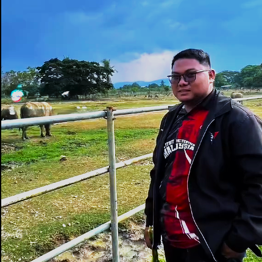
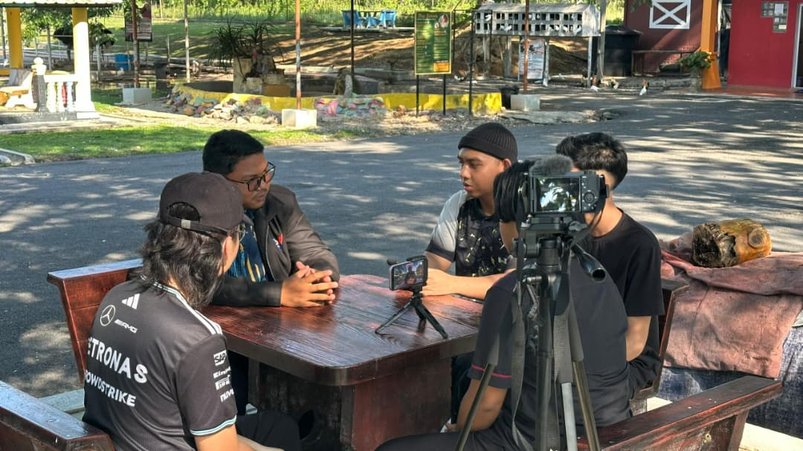
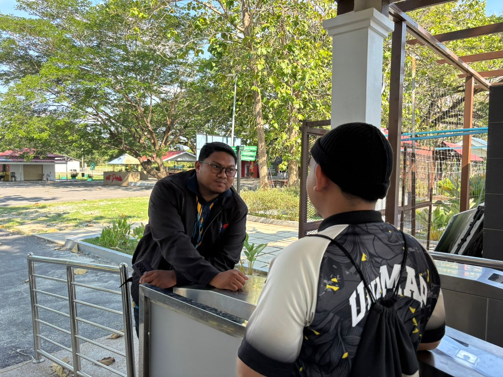
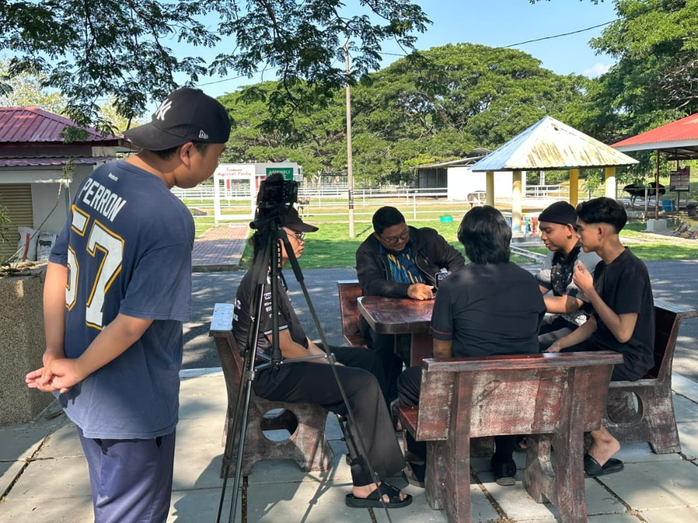
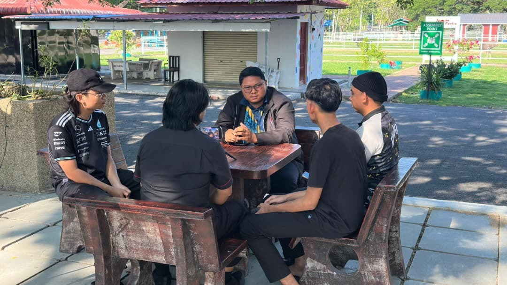
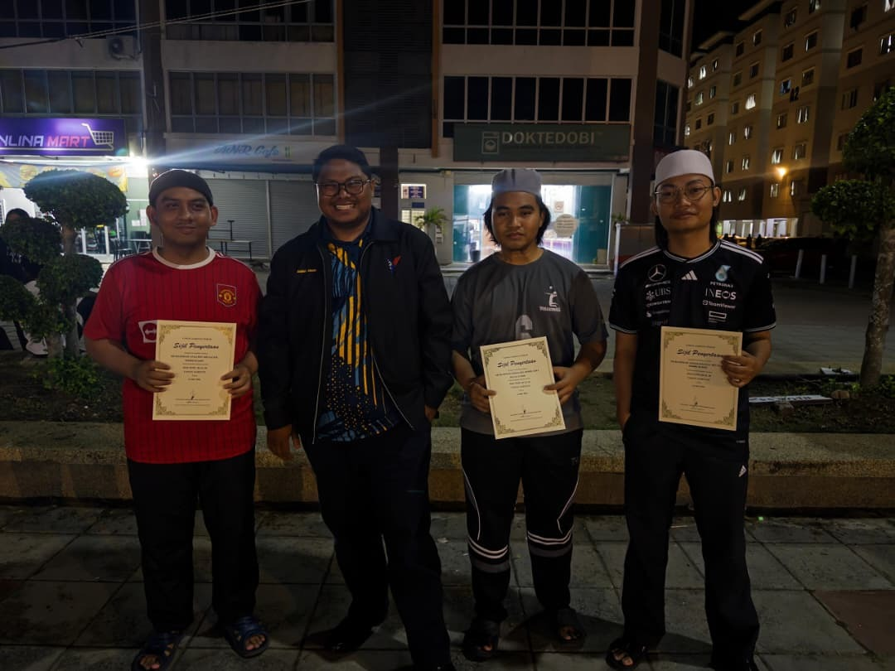
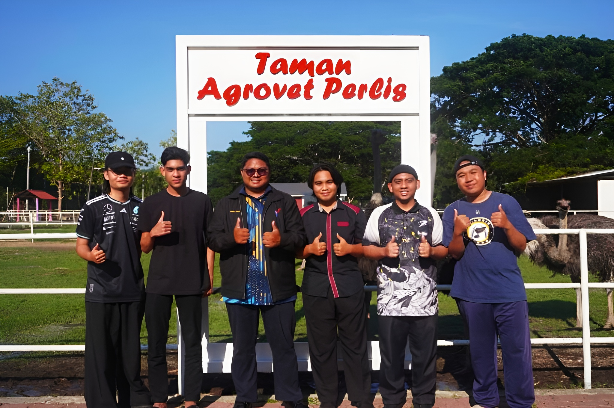

Exploring my journey in veterinary services







Visit from Universiti Malaysia Perlis Students to Perlis State Agrovet Park
Starting my career as a Veterinary Assistant, I quickly learned to manage farms and care for the animals. Transitioning to the Livestock Slaughtering Department was a big step that taught me precision and responsibility.
“Passion for animal health drives my career forward.”